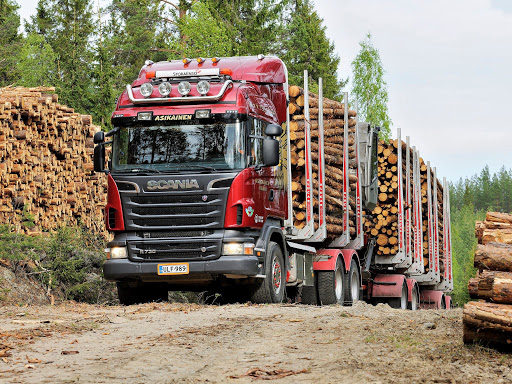

MEDNARODNI IN DOMAČI PREVOZI TOVORA V CESTNEM PROMETU
PREVOZI SPLOŠNEGA TOVORA
Opravljamo prevoze z vlačilci in polpriklopniki ter priklopniki za naročnike različnih industrijskih panog: avtomobilska, papirniška, tekstilna, prehrambena, pohištvena, gradbena, industrija bele tehnike …
PREVOZI VOZIL
Opravljamo prevoze novih in rabljenih osebnih vozil ter kombijev s specialnimi vozili – transporterji.
PREVOZI TEKOČIH KEMIČNIH SNOVI
Opravljamo prevoze tekočih kemičnih snovi s cisternami (ADR).
PREVOZ POGONSKIH GORIV
Opravljamo prevoze tekočih pogonskih goriv s cisternami (ADR).
PREVOZ LESA
Opravljamo prevoz lesa.
SERVISNE STORITVE
V naših servisnih delavnicah opravljamo mehanična, kleparska, ličarska in vulkanizerska dela. Imamo avtopralnico za tovorna vozila.
